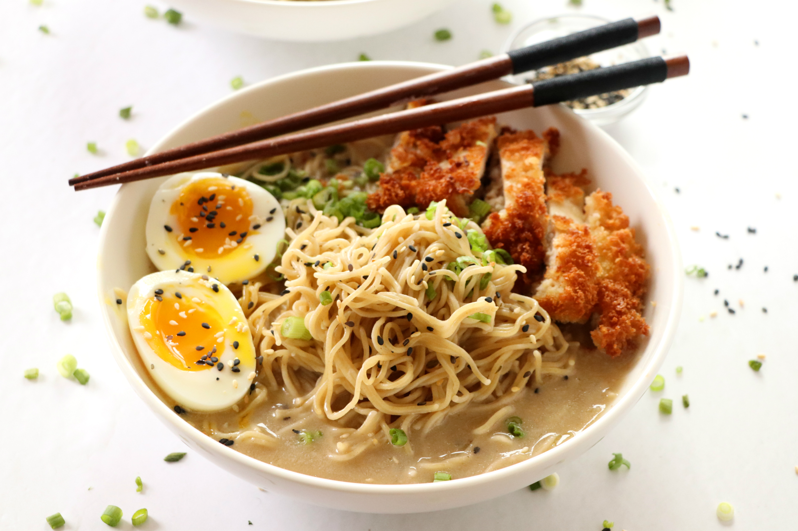

home
menu
contact
Oishi Restaurant
Our food makes your hungers gone!
Chicken Katsu Ramen

l2 boneless, skinless chicken breasts
½ cup all-purpose flour
2 large eggs, beaten
1 cup panko breadcrumbs
Salt and pepper, to taste
Vegetable oil, for frying
The rest of the recipe